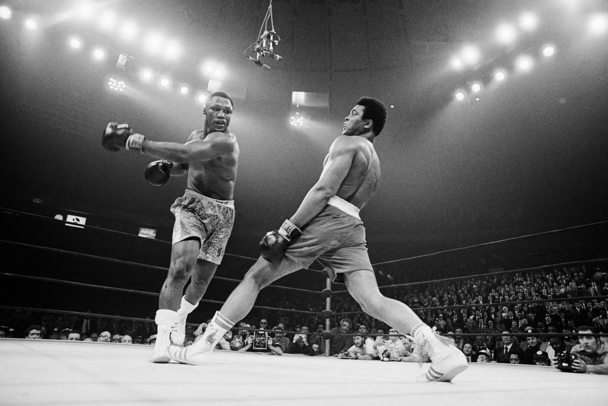

Pelea Legendaria
Foto para la posteridad

Knock out
Una victoria mas

Su carrera profesional se inició al conseguir la Medalla de Oro en las Olimpíadas de Roma, en 1960, en la categoría de los semipesados. En 1964 dejó K.O. a Sonny Liston y le arrebató el título mundial de la máxima categoría, los pesos pesados.
En 1967, al ser llamado a filas, rehusó ir a combatir en la guerra de Vietnam, y se declaró objetor de conciencia por razones religiosa; y la justicia lo condenó a cinco años de prisión.
Una vez cumplida la condena, volvió al ring y recuperó su título al vencer en 1974 a George Foreman, en un combate que se celebró en Kinshasa (República del Zaire), organizado propagandísticamente por el presidente Mobutu Sese Seko para reafirmar su régimen. En 1980 disputó su último combate, en el que fue derrotado y desposeído definitivamente del título mundial de los pesos pesados.